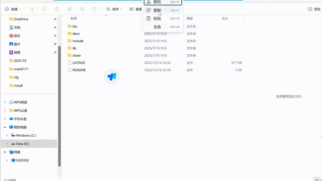

MySQL安装脚本生成器
一键生成 MySQL 安装配置文件和批处理脚本，让数据库安装变得简单高效
✨ 开源项目
•
🚀 静态部署
•
💡 简单易用
配置参数
填写以下信息生成安装脚本
安装路径
MySQL 版本
root 密码
生成脚本
生成完成！
选择您需要的操作
查看 my.ini 配置
查看命令行脚本
下载图标
一键全部下载
打包下载
my.ini 配置
下载 my.ini
关闭
命令行脚本
下载一键安装脚本
关闭
使用效果演示

友情链接
旗下站点
a.d 云盘
a.d 个人主页
a.d 技术博客